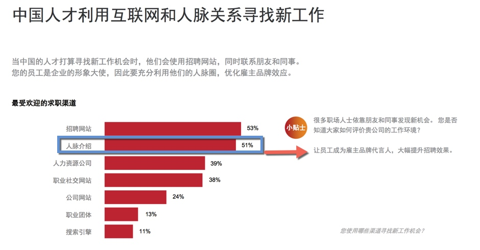
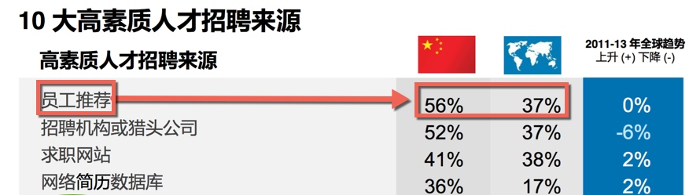
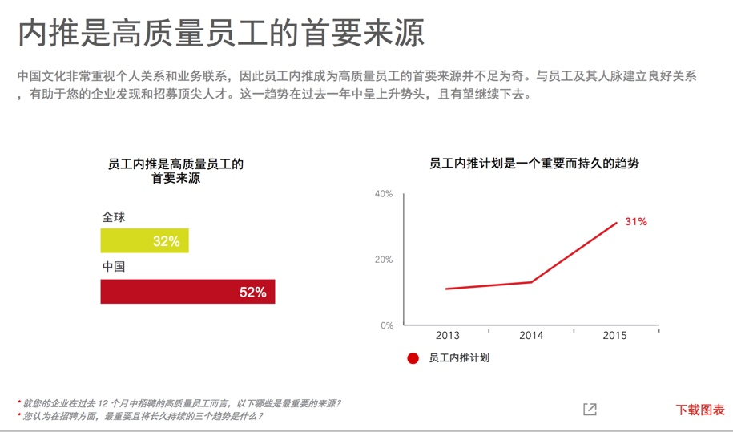
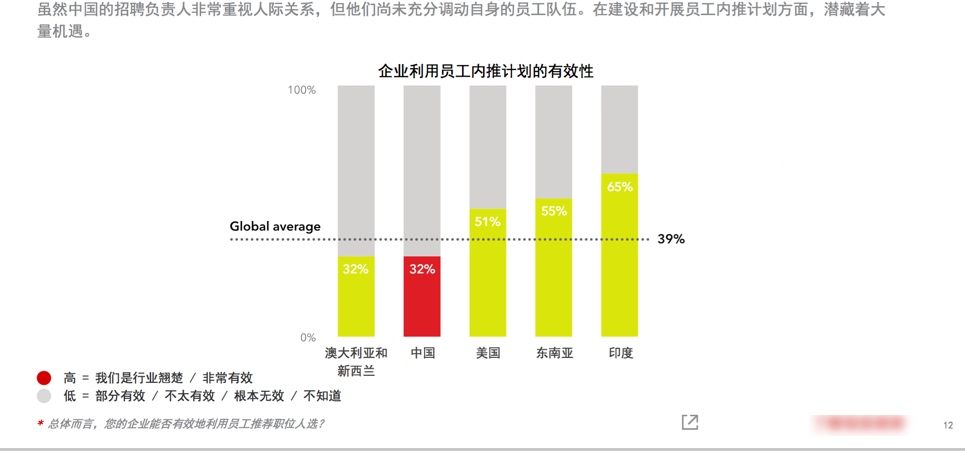

开放式招聘系列（七）： 唯深入理解业务，才能到达远方
继续谈出类拔萃的招聘人员。
我在 放式招聘系列 (一）： 实施面向收入的招聘中提到
出类拔萃的招聘人员都做什么呢？我们现在看下他们主要的行为表现：
- 他们深入理解企业业务
1. 深入理解企业业务，让招聘人员有信手拈来的能力
招聘人员 对人性和人格 的思考是一方面，另一方面实质还得扎根于企业业务。
我们看一个救急的故事：
我的同事安排了岗位面试，但她临时有事不能来主持面试，急匆匆地电话我，我不得不去面试救急。
此时没有时间再过多地准备面试的考核方法，因对企业业务很熟悉，那么我知道我可以应对了。
因此这时候我完全可以在面试的过程中，根据候选人自身的特点（特别是可能的薄弱点/弱点）临时设定考核方法
- 对没做过管理的人，要求他做见面会的讲话，见面会中工作的布置（分工、团队人员的认识和了解）看他打开局面的应变；
- 对技术人员，要求他做方案的预测推演（推演的相关因素他是否会提到，推演的方面来判断他是否有掌握、研究思考过）
- 对一般的蓝领工人想做白领工作，现场要求他拟邮件公告或者通知、或者让他操作数据软件 （ 基本的操作方法是否熟练、公告的内容是否达意）
平时是有思考过这些方法，并且对业务了解才能信手拈来。
不然还是早钻研业务通过业务点来判断用什么方法；而不仅仅是人的分类。当然以上也可以由用人部门来提问。
但是不单指救火的情况，在高级人员的招聘过程中，这个前期的沟通就不得你不懂业务了。我会在第三部分谈到这点。
2. 深入理解企业业务，帮助我们与用人部门建立信任
深入理解企业业务，才能清楚真正的用人需要
之前我提到建立信任可以和建议——对比用人经理过往用人经历。
我们来回忆下，我们都吃过鱼刺的亏，大部分直线经理也吃过手下不好用的亏，就像我吃过多刺的鱼肉的亏一样，那种感觉不好受。
不放心的感觉就如同害怕鱼刺卡在喉咙里或者已经“有哽在喉”了，要费力、费心力 担心 慢慢地剔掉刺。总之是不畅快。有个建议，大家可以来看下——提倡用人部门领导做好记录/备忘录；一个是评估绩效用，一个就是选人时候用到了；
我们大脑是容易忘记痛苦的。容易好了伤疤忘了疼。记录的细节能帮助我们一起回忆当时。
回想以前的场景，用哪种人用得畅快？ 他们能很快想起来，要避免用哪种人；当然这个时候你要记住，重要的是回忆当时的行为，记录当时的行为，这些才是有效的，而那个表现不佳的下属的性格往往可以略过；
然而大部分的用人经理未必是有这个建立记录的习惯的，在对比用人经历的过程中，如果你不了解企业业务，你未必知道用人经理的经历是否适合本企业、本阶段。
如果不懂的业务，你也只能一味地附庸用人经理的意见了，不论他是否会犯经验主义错误。
这个过程，如果你也熟悉业务，那么在倾听故事的同时，你就可以有所张驰地和他一起梳理。既对岗位职责进行了复盘加深了你对业务的理解，又得到一个可用框架，又促进你们的互信。
当然除了以上对比用人经理的过往用人经验，还有横向的对比，对比其他部门的实践经验。其他内部、外部用人经理的实践经验。
而这些对比的过程中，同理，如果你也有很好地理解过企业业务，你自然可以和业务部门一起挑选和参考对标企业的实践经验。
以免东施效颦 邯郸学步之苦。
深入理解企业业务，才能把握准确的用人节点
我在之前还提到
未来场景哪种人才组合才够用，建立一个战力预判；
我们要去雇佣一类人，一旦他们进入公司，他们的职业生涯可以在我们的企业中得到爆发性增长。
另一个面向是，与他们一起看未来，盘点人才，琢磨部门人员配置计划。比如：公司的明年的战略是这个，我明年需要的是什么样的团队来支撑呢，现有的哪些人表现不行，哪些还可以提高，还需要什么样的人来配合。
这个过程同样离不开你对业务的熟悉，以此为判断的基准，以便和用人部门达成一致。而不是你提出的建议出现窘境。
除此之外，我们在招聘中，其实还经常用到一种招聘方式，即实施预见性招聘，具体是形成周期性的沟通协调机制：
经常性与面试官沟通部门用人情况（员工表现、工作饱和程度、团队工作效率、员工离职预判、团队氛围了解），预判招聘需求。
深入把握企业业务你才能：
1） 每年沟通用人编制的时候，更快地与面试官达成招聘计划。——年度招聘计划节点、实施时间、招聘时间表、预计招聘方案（实施难度、人才分布、到岗时间）
2） 对关键岗位、常规岗位做好预案，比如，季节性和项目性的需求岗位，人才库里已经做到了提前储备人才。
试想，如果招聘人员对企业的业务不重视，不了解，不深入把握，如何能够判断到以上需求呢？
3. 深入理解企业业务，帮助我们与候选人建立信任
企业某项业务在市场中的地位
- 业务发展处于何种时期?
- 上升或者下降或者攻坚? 不同时期...
- 企业业务的竞争对手。。。
把握了行业发展才能有的放矢地与高级人才的沟通
才能给出职业发展路径，给出的发展路径才具有参考意义。
。。。。
以上都离不开招聘人员对企业业务的熟悉
＃欢迎联系与探讨 ，Arvin Yu 邮箱：yuyandong@outlook.com #
本作品采用 知识共享署名-非商业性使用-禁止演绎 3.0 Unported许可协议 进行许可。

开放式招聘系列 （六）：如何有效说服用人部门面试官，并有效合作
我在 开放式招聘系列(一)中提到，类拔萃的招聘人员他们主要的行为表现：
比如
他们能有效说服用人部门面试官，并有效合作
今天我简单讲下这点，有的会稍微超出招聘人员的职责范围，我先略过。
下面的几点建议，其实都是从基本的地方开始的。
实质就是围绕下面这点来谈。
他们深入理解企业业务
在建立合作关系方面
当他们主动找过来的时候，我们要能提供建议
部门人员配置部分。。。。
总监们会来咨询HR 的政策，因为大部分时候这些不是他们关心的重点，当问题出现的时候他们会想到HR , 想起HR 能提供建议，比如 用人的建议。
而变动大的部门，比如新总监到岗后要凝聚团队，他会用多种方式：比如手下员工涨工资、下属升职、增加人员编制。 会频频找到HR。
。。对应情境下。。
。。如何建议呢。。。
我们来看3点：
1） 。。。
2） 。。。
3） 。。。
当他们没有主动找过的时候，我们要给出易用、有效的工具；
面试/用人决策的部分。。。。
其中之一：
我在北海吃到的一种最舒服的鱼，它刺少 （海鱼大部分鱼刺比较大，细的刺很少——大的确定的缺点就如同你看得见的大刺，小的没有），我以前吃得比较多是鱼刺细且多。而这种鱼 没有细的刺，居然不用剔刺。到嘴里不用折腾，畅快地一口吃到肚子里。虽然肉质没有淡水鱼那么嫩滑润。 但是畅快地吃，不用担心鱼刺卡喉。
用人是否也可以畅快地用呢？
你不想吃到多的鱼刺，用人部门也不想。道理就这么简单。有效的应用方法是什么呢？
我们来回忆下，我们都吃过鱼刺的亏，大部分直线经理也吃过手下不好用的亏，就像我吃过多刺的鱼肉的亏一样，那种感觉不好受。
不放心的感觉就如同害怕鱼刺卡在喉咙里或者已经“有哽在喉”了，要费力、费心力 担心 慢慢地剔掉刺。总之是不畅快。
怎么畅快地让用人部门能够畅快地用人呢？
1） 有个建议，大家可以来看下——提倡用人部门领导做好记录/备忘录；一个是评估绩效用，一个就是选人时候用到了；
我们大脑是容易忘记痛苦的。容易好了伤疤忘了疼。记录的细节能帮助我们一起回忆当时。
回想以前的场景，用哪种人用得畅快？ 他们能很快想起来，要避免用哪种人；当然这个时候你要记住，重要的是回忆当时的行为，记录当时的行为，这些才是有效的，而那个表现不佳的下属的性格往往可以略过；
同时 也有必要理清当时的团队环境：以前手下如何好？好用在哪？ 用完后——回忆当时关键的场景是什么？场景一般也是工作职责的内容。比如会议里、负责撰写报告时、技术难点出现时，与他们一起回忆。
这个故事，既要用人部门经理讲，你也要和他一起梳理。如此既对岗位职责进行了复盘，得到一个可用框架，又促进你们的互信。
2） 未来场景哪种人才组合才够用，建立一个战力预判；
我们要去雇佣一类人，一旦他们进入公司，他们的职业生涯可以在我们的企业中得到爆发性增长。
另一个面向是，与他们一起看未来，盘点人才，琢磨部门人员配置计划。比如：公司的明年的战略是这个，我明年需要的是什么样的团队来支撑呢，现有的哪些人表现不行，哪些还可以提高，还需要什么样的人来配合。
。。补上工具清单。。
这些他们心里面有数了，我们 HR 自己的工作才好开展。
如果沟通中，不考虑他们团队的过去和未来，只是为了定人头数而定人员编制，那是走形式。
不在平时建立合作关系，比如在需要你提供可操作建议的地方，你不出现；你就错过提取人员团队配置意图的时机，错过部门关系的助力时期，错过这些时期，那些嘘寒问暖可就不是锦上添花了，只能是功夫了。
参与到团队组建、配置的过程，好的招聘人员才能有效地和用人部门一同合作，发挥各自的优势。 做好战略伙伴。
# 欢迎联系与探讨 ，Arvin Yu 邮箱：yuyandong@outlook.com #
本作品采用 知识共享署名-非商业性使用-禁止演绎 3.0 Unported许可协议 进行许可。

开放式招聘系列（五）：全员招聘——内部招聘
内部招聘，不仅促进规范内部人员的流动秩序，也是补充高素质人才的一种重要方式。
一些朋友问我，内部招聘是什么？ 是不是用人部门跟HR 说，那个人不错，给我调动我们部门吧就可以了呢？
是不是员工说，我已经得到另一个总监的同意了，他同意让我去他们部门做xx岗位，然后就调过去呢？
除非你乐意看到两个部门在拉锯，不然你得想想如何规范内部人员流动。
规范内部人员流动，有什么方法呢？我们来看看我今天的主角——内部招聘
内部招聘其实源于内部人员流动，为了规范内部人员的流动秩序。
不同风格的内部招聘
从招聘的角度，以往从业经历中，我操作过 2 种不同风格的内部招聘方式：
A：高度定制的流动：
这里的竞聘有一个起始条件：员工必须达到绩效标准才能得到晋升机会。
3个主要环节：选拔-培训-竞聘
绩效达标的人才能被人力资源部门选出来，参加下一步的培训；
企业先挑选出部门内绩效表现好的员工，然后这批在各部门里达到绩效标准的人，脱岗1-2周参加内部训练；进行短期的训练
这批人会在这个阶段接受短期的内训，参加企业依据上一级别岗位的素质要求开发的课程；训练后才到我们平时意义上的内部面试
组合式的结构化面试，出结果。日常工作的绩效表现和培训阶段的学习成绩也会成为面试的基数（影响结果/排名）；
如果说上面的是被选择来参加高度定制的流动
那么下面我说到的另一个操作则是自由流动
B： 自由流动
这里的岗位员工个人可以自由申请，公司尊重员工个人的选择。
企业在内部发布各个空缺岗位信息（开放岗位），员工根据此信息来申请；
申请的员工知会现直属上级，征求部门经理的意见；
同时该空缺岗位，招聘人员也会在外部渠道发布空缺职位招聘信息；
申请简历到达 招聘人员手上后，招聘人员根据简历情况，安排内外部员工参加面试
- 此时的面试，一般都会有内外部员工参加。
- 根据不同人员的表现，进行打分，同等条件下，内部员工优先适配；
为什么它是补充高素质人才的一种重要方式？
水往低处流，人往高处走
很容易看到，上面两种方式都能发现人才，因为有一个重要因素——人员的流动是倾向于往上流动。
它是内部人员发展的推进器。
两种不同风格，作用的方式不同：
大浪淘沙——挑出来高素质人才
机制里，推着你往前：
当同期的都参加过竞聘了，我们的员工会想：为什么我还没有呢？是个人哪方面表现不足呢，绩效应该还能提高吧，下次到我了吧？机制里，不出色就掉队：
发展不起来的员工，慢慢跟不上需求，慢慢就被新鲜血液淘汰。毛遂自荐——高素质人才跳出来
这个机制，提供机会。给个人选择的机会，意味着，一个开放的、 宽松的流动机会，只要有能力，申请了你就站在了展示的舞台。
展示后，如果成功，新的岗位，新的机遇。
而哪怕不成功，你还将能和内外部人才的对比，各位实力技能如何，我如何，我还需要哪些提升？内部面试官是很乐意与员工沟通，回去提升的同时，面试官一般也会关注到其中表现不错的员工——也会纳入人才库。
内部招聘，不仅有效地保留了人才，更让人才有机会与企业一同发展，为企业发展提供火力。
它还是一个吸引外部求职人员的信号灯
不重视人才发展的公司，一般你不会地看到内部清晰的挑选机制。
它也许会含糊其词/义正辞严：“对，你将能在我们企业得到很好的发展，你看这个通道那个通道。”
而通常有上面两种形式的选人机制的企业，还是更值得你去关注的。
为什么呢。因为它不是明显在说吗——“我给你机会要不要，要，那就来吧，我们的机会是可见的。”
目前实践如何呢
然而这一块的数据（来自Linkedin 2016中国人才招聘趋势报告） 和现实并不好看：

在国内大部分企业在「内部招聘」实践方面还是没有制度化流程化

如果你不想企业内部人员流动导致部门拉锯，想内部人员和企业一同进步发展，想更多地吸引外部人才，在人才竞争中迎头赶上，那么选一种机制吧。
哪种好操作呢
前者侧重服务企业发展，后者兼顾尊重人性。
前者侧重晋升，后者兼顾晋升与横向的流动
两种风格不同的实践，各有利弊。当然中间烦恼的事不少（可以讲一箩筐。。。。）
1）自由流动的弊端：
比如 我们看到尊重员工个人的选择也是一种尊重人性的做法：
个人如果申请开放岗位，有一种情况，我们不得不思考：
- 要么是员工觉出自己在部门内没发展或者不喜欢自己的部门，寻求好的发展机会。
- 要么是员工认为自己可能得到不同的发展，可以做出不同的贡献，得到提升的机会。
这个时候用人经理之间的协调。。。部门利益 个人利益 公司利益的协调。。。
此时倾向于哪方呢？既是公司文化也是部门管理的权衡了。
最终是要寻到其中的合力。
2） 高度定制的流动的弊端
高度定制的流动，凸显的是赛马而不是相马。然而它的另一面其实你还得思考：
比如
- 你所谓的赛马真的是我想赛马吗
你所谓的赛马是真的在赛马吗
既然是定制，那么也不是那么好定制出来的，也是需要前期投入更多的资源，比如 根据素质模型定制的选拔标准、各个环节的训练成本。。。
高度定制的流动，它更是偏向于晋升的一种流动。
对于快速发展的企业，那么自然推荐高度定制的流动。
如何实施呢
企业发展到一定规模的时候，为了有序地规范人员流动，不管是内部流动向上/横向流动，还是外部流动，企业有必要进行内部招聘，以引导流动的人才去到企业发展需要的地方。
如何实施呢？
请选择其中一种实施。
（具体实施需另起一文）
＃欢迎联系与探讨 ，Arvin Yu 邮箱：yuyandong@outlook.com #
本作品采用 知识共享署名-非商业性使用-禁止演绎 3.0 Unported许可协议 进行许可。

开放式招聘系列（四）：全员招聘——内部推荐
内部推荐（又称员工推荐），是企业通过发动企业内部员工调用自己的人脉资源来帮助公司推荐优秀候选人的招聘方法。
为什么内部推荐
国情如此：

我们看2013 年的数据
高素质人才的招聘更具有竞争和示范作用，是招聘的典型故数据以此为主。
数据告诉我们：
1）高素质人才招聘更多来源于内部推荐——来自LinkedIn 2013 全球人才招聘趋势的数字

2）内部员工比猎头行动还要厉害——来自腾讯当年的电商部门
通过内部伯乐这个招聘渠道招到的人才占到整个社会招聘的 48%，资深岗位内部伯乐的贡献率也达到 35% 之多——这让和腾讯合作的猎头们‘叫苦不迭’，他们不知道竞争对手是我们的内部员工
2015年的数据 (图表来自linkedin )
显示中国企业在2015年中招聘到的高质量员工有52% 来源于内部推荐

2016年的数据，只会升，不会降低
一个是企业的招聘需求增加，二个是人才对自己的职业发展要求越来越高。
招聘慢了的话，这个高素质人才就跑到别家公司上班了，哪怕你是口头预定了offer 给他。
一个优秀的人才，在市场上不出 1 周就基本上被抢空了。
紧急用人的时候，HR 招聘人员动作再快（如果他没有做预见性招聘工作），也比不上一个部门全体来推荐的动作。
要知道某个狼性的企业有一年还特别 要求员工过完年上班的时候，必须要给公司推荐 xxx 个人的。
显而易见，高素质人才的招聘本来就是资源的激烈竞争，内部招聘无论是成本还是时间上都是一个很霸气的存在——前提是你用好它，那么如何做呢？
内部推荐实施
从下图 Linkedin 数据来看，大部分的国内企业的内部推荐的有效性还不到全球平均水平 ，可见（ 32%——> 39%——> 65%）仍然有很大的提升空间，能用来提高内部推荐的有效性，为企业高速发展提供更有效的支持。

实施的时候有哪些节点呢以及要注意哪些？
一般节点
- 制定奖励政策
- 发布悬赏职位名单
- 制作内部推荐登记表，方便员工发送或打印提交 HR 及汇总
- Weshare 网络和线下公告，比如 公司通勤车、茶水间、邮件
- 推荐进度反馈
- 内部推荐问答
具体实施方法其实还有很多
- 分类大法，优秀的人周围也是聚集了更多优秀的人。比如统计出过去 12 个月里招聘过来的表现优秀的员工，重点让他们来推荐。
- 在招聘后，入职阶段。。。。
特别关注点
内部推荐项目，详细定义激励的要素及操作的流程。
- 在试运行的过程中，调查参与推荐的员工， 问他们这个项目里哪些方面对他们的参与有促进作用？哪些方面还需要提升？并询问他们期望得到的奖励和激励的列表，其中哪些部分尤其让他们感觉到兴奋？
- 你也可以调查哪些没有参与的员工，哪些方面阻碍了他们参与推荐？
- 在奖励和激励的列表里，哪一个可能会提升他们的参与度？
- 走出去与其他公司 HR 进行探讨，鉴别和分享最有效或最新的方式，激励员工内部推荐
其实内部推荐，基本的还是离不开全体员工参与的意愿。如果不能长效地做，只是打算试探、试试这个渠道/方法有没有效果，那么员工的意愿就会受到打击了——他也不是天天有朋友在找工作，也不是每一个朋友他都会推荐来的，企业在这一块如何做呢？
a）要做出示范效应
示范给大家知道，比如这个员工一直有推荐，是不是给定个伯乐勋章呢，弄个定制的铭牌呢？该宣传的就要宣传。比如奖励的信息要让全体人员知道吧，鼓励的气氛要营造吧。
b) 要做水磨功夫
没有合适岗位的时候也要跟进员工推荐的简历，哪怕这个简历不合格不合适，也要跟进，该感谢的感谢，该保存进人才库的保存进去。可千万别弄个不更新的人才库。
内部推荐补充：
高端岗位还可以深入使用
如果企业规模小，用人急，怎么办？这个方法有用吗？
它们其实都要指向——A级人才
行业分布应该懂吧（又是一篇长文。。。）
#欢迎联系与探讨 ，Arvin Yu 邮箱：yuyandong@outlook.com #
本作品采用 知识共享署名-非商业性使用-禁止演绎 3.0 Unported许可协议 进行许可。

开放式招聘系列（三）：全员招聘——面试体验
招聘也是企业的一种销售——将企业“销售”给合适的候选人。
New LinkedIn research has revealed the striking results that emerge when marketing and recruiting join forces. Not only do both departments benefit greatly, but the company as a whole does as well— to the tune of a 35 percent increase in sales.
求职者其实是公司潜在的客户，好的体验和坏的体验带来极不同的结果。
我们来看两个对比：
1）坏的招聘体验的影响，只是大部分的招聘人员未觉察或者不愿如此察觉。
昨天看到一份数据显示：
有 58% 没有收到目标公司答复的应聘者，较少可能购买该公司产品；更惊人的是，面试后没有得到结果反馈的人中有65% 也有这样的倾向。
因为没有看到这份数据的调查样本范围，而且来自一个提升招聘体验的公司员工。这份数据还要谨慎看待，不过它倒是提醒我们一个基本事实：没有人喜欢坏的面试体验。
2）好的招聘体验是什么效果呢？我们来看一份好的招聘体验带来的效果：
In fact, 80% of people who have been interviewed and rejected report that they would still recommend a friend apply to Google.
大意：谷歌面试过和拒绝过的候选人中有80% 的候选人还是会推荐他们的朋友应聘谷歌的职位。
谷歌还有一个实践分享，它说：
Google wants interviewing to be part of every Googler’s job
谷歌希望面试成为每个员工职责的一部分。
然后在文章中，它列出了谷歌招聘团队对面试官们的培训和支持的方法，以此达成让面试工作可以成为每一个谷歌人工作中的一部分。
为什么全员面试
为什么这么做呢？
上面我们看到，谷歌在招聘实践中很重要的一部分，其实是全员招聘来提升面试体验。
而面试体验的必要性，更多的故事你可以在这儿读到
谷歌
谷歌为什么这样做呢？它说了 2 个方面的原因：
1） 相比公司职位与福利，候选人关更注与用人部门面试官的沟通
谷歌内部调研显示，在招聘体验上，候选人提及最多的是他们与面试官的交流——对大部分候选人来说，这方面的重要性高于岗位类别、福利、也高于与招聘人员的交流；
谷歌要更突出部门面试官在面试过程中的作用，不仅是因为候选人重视，也因为
2）企业在面试中不仅能找到合适的候选人，还有助于巩固企业文化，有助于增进同事情谊，也还可以增强现有员工对公司的归属感比如当员工对面试决策能发表个人见解，能够增强团队成员的归属感。
3）另外，我们也可以看到第三点：面试官团队一般都需要知道并把握部门的用人要求、以便挑选新人更快地协同作业、融入团队。如此公司的用人理念在招聘过程中传达给所有的同事，也一定程度上为他们预备成为管理者，所需的组建团队的能力。
中国企业
那么在国内情况如何呢？情况其实和谷歌的内部数据一致。
Linkedin 的一份数据显示：面试经历中中国人才看重的最重要的因素也是与面试官的交谈，特别是用人经理的交谈， 招聘负责人反而是其次。

面试体验如此关乎人才得失，你也注意到了吧，这个体验的提升并不只是招聘人员工作，还得更多的部门参与进来，那么如何呢？
继续走老路吗？还是换种姿势拥抱变化呢
如何全员招聘？
谷歌继续分享了它们的训练面试官的实践，感兴趣的点击链接可见具体内容。过于面试官的训练，我会另外一篇文章来介绍。
在我看来，为了提升招聘体验和加快招聘效率，还有很多做法：
- Team 展示—— 团队成员、团队气氛 、团队间交流风格
- 多成员一起参加面试，投入到面试环节——面试并一起做出录用决策；
- 投入到新人 Onboarding（接待、指定同事指导 ）
- 投入在试用环节
以上是全员招聘的一些实践环节，范围其实很广。
而之所以这么强调面试体验，是因为招聘体验已然关乎招聘成败。
在 Linkedin 2015 年人才趋势报告的数据也揭示：

再次强调，好的招聘体验能带来更多的候选资源。
80% of people who have been interviewed and rejected report that they would still recommend a friend apply to Google.
被谷歌面试过和拒绝的人员中，有 80% 的人说他们会推荐朋友来申请谷歌的工作。
除此以外，我所说的全员招聘还有两个很重要的组成部分： 「内部推荐」+「内部招聘」
我们在该系列继续探讨。
开放式招聘系列（四）：全员招聘——内部推荐
开放式招聘系列（五）：全员招聘——内部招聘
# 欢迎联系与探讨 ，Arvin Yu 邮箱：yuyandong@outlook.com #
本作品采用 知识共享署名-非商业性使用-禁止演绎 3.0 Unported许可协议 进行许可。
Copyright © 2015 Powered by MWeb, Theme used GitHub CSS.